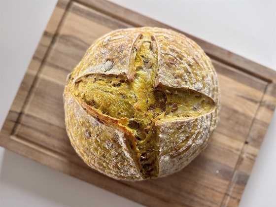
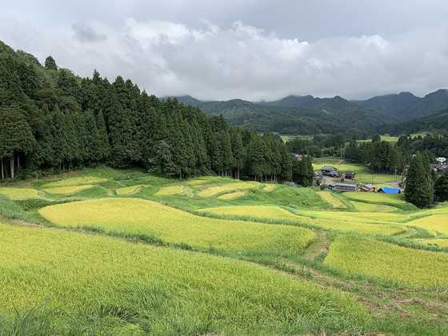
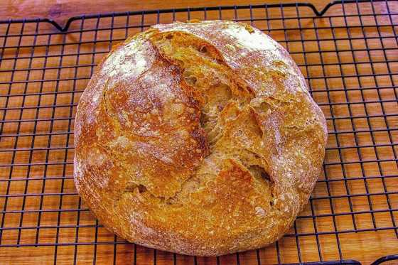
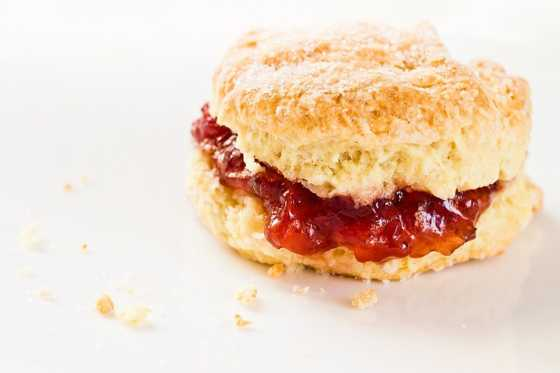
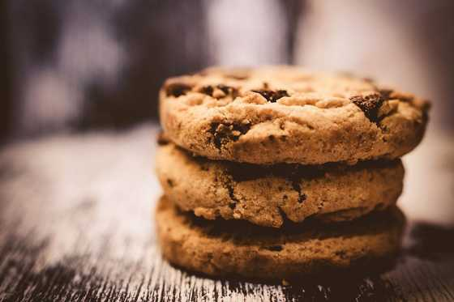
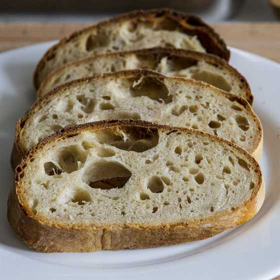
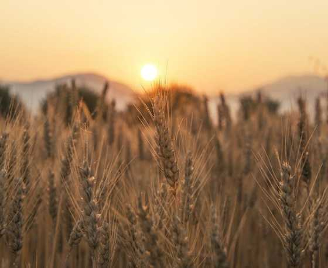

茨城県桜川市 門毛
いろはパン
門毛の土地と古い建物にそっと寄りそう、小さなパンとお菓子の店。
お店のこと
茨城県桜川市門毛、栃木県との県境に近い山あいの道沿いに、ひっそりとたたずむ小さなパンとお菓子の店です。
お店があるのは、昭和初期に移築された肥料店の一角をリノベーションした建物。工事では、できるだけ門毛の土地にあるものを材料に選び、母屋の小屋裏から見つかった古材や建具、ガラスのケースなども活かされたと紹介されています。
大工さん、デザイナー、カメラマンも門毛の人たち。地域の手でできたお店です。2021年7月1日の開店と案内されています。

※上記は設計事務所の施工事例・ブログ記事などで確認できた内容です。「いろは」という店名の由来は確認できていないため、このサイトでは触れていません。



メニュー
お店では山型食パン、スコーン、キッシュなどが紹介されています(その日の品ぞろえは異なります)。営業日・営業時間・価格は準備中です。ご来店前はInstagramでご確認ください。






食パン
価格 準備中
スコーン・焼き菓子
価格 準備中
キッシュ
価格 準備中


口コミ
イメージ例
山あいの道を進んだ先に小さなお店があって、少し遠出した気分になれました。パンの素朴な味が好きです。
イメージ例
古い建物の雰囲気がやさしくて、パンを選ぶ時間まで楽しくなりました。売り切れる前に行くのがおすすめです。
イメージ例
スコーンをお土産にしたら家族に好評でした。また季節の焼き菓子を見に行きたいです。
※口コミは制作側で作成したイメージ例であり、実際のお客様の声ではありません。


